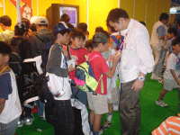

お子様向け、学校紹介、物販など……
多彩な出展
【キッズ、ゲームスクール、物販、ベンチャーコーナー】 |
"東京ゲームショウ"の目玉は一般出展だけではありません。お子様向けのソフトが展示されるキッズコーナー、未来のゲームクリエイターを育成するゲームスクールのコーナー、ゲームグッズがその場で買える物販コーナー、そしてベンチャーコーナーなども、たくさんのお客様で賑わっていました。
|
 |
| ▲キッズコーナーでは親子で遊ぶ姿がたくさん見かけられました。 |
▲係員の人にゲームの質問をする子供たち。キッズコーナーならではの風景。 |
|
|
| ▲ゲームスクールコーナーでは、在校生の作品を展示しているところもありました。 |
▲学校関係者の方と接することができるいい機会だっただけに、将来ゲームクリエイターを目指す人達には勉強になってのでは？ |
|
|
| ▲物販コーナーもこの混雑ぶり。 |
▲お目当てのグッズを購入するために行列を作る人々。 |
|
|
| ▲ベンチャーも負けていません。活気あるソフトを多数展示していました。 |
▲ベンチャーの試遊台前にもこのとおり行列が。 |
|
|